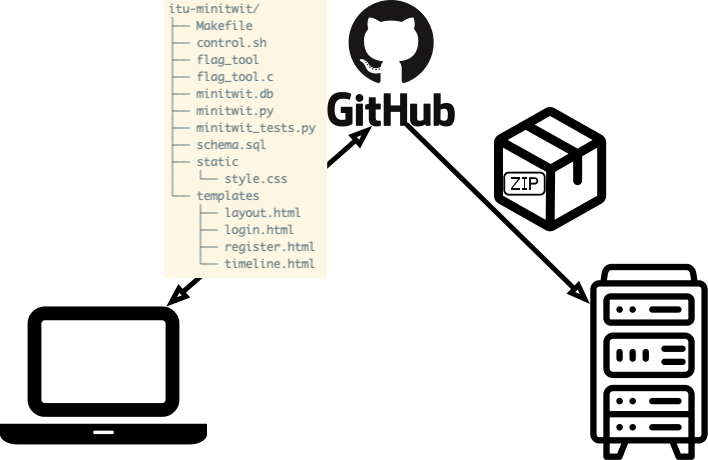
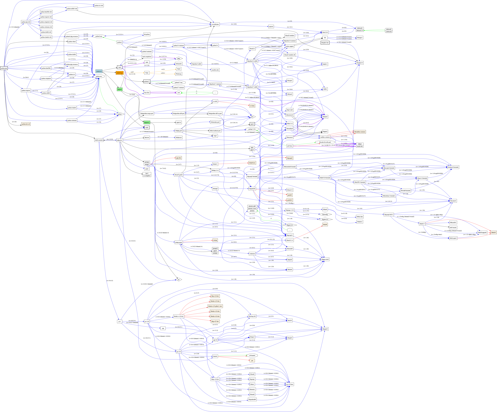
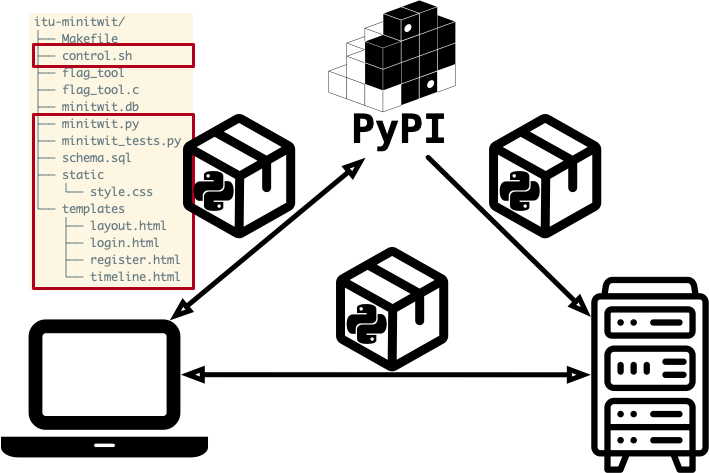
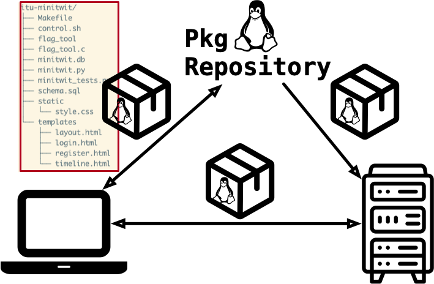

Wclass: center, middle <img src="https://www.saa-authors.eu/picture/739/ftw_768/saa-mtcwmza4nzq5mq.jpg" width=40%/> # DevOps, Software Evolution and Software Maintenance Helge Pfeiffer, Associate Professor,<br> [Research Center for Government IT](https://www.itu.dk/forskning/institutter/institut-for-datalogi/forskningscenter-for-offentlig-it),<br> [IT University of Copenhagen, Denmark](https://www.itu.dk)<br> `ropf@itu.dk` --- class: center, middle # Feedback --- ## Work systematically * While working, take notes of what you are doing. - A text file in your workspace might serve you well as a notebook. - Keep a record of **when** you did **what**. - Note down what went wrong, where you found a solution, and keep a link for that. * Commit these notes to your repository. One DevOps principle is to _Make Work Visible_. -- * Decompose tasks into smaller ones and note them down in [GitHub issues](https://github.com/features/issues) * For your training and to support my research, please note down per issue, how long it took you to complete it. - Please use the following notation to report how long it took you to work on a task: - In the last line of an issue: Add `/Timespent Xh Ym`, where `X` and `Y` are integers denoting hours and minutes. - E.g., `/Timespent 3h 20m`, `/Timespent 1h 00m`, `/Timespent 25h 30m`, ... * We talk more deeply about these last two points in three weeks. --- ## Groups? Are you done grouping or are there students not having a group yet? - 11/79 students are still ungrouped? --- ## Expectation: Read carefully and work continuously The task description for this week contained the following: > Please share your repositories with us. Send a GitHub pull-request on the file [`repositories.py`](https://github.com/itu-devops/lecture_notes/blob/master/repositories.py) in which you replace, e.g., `https://github.com/<gh_id>/<proj_id>` with the repository URL of your group. In case you use more than one repository, please add them to the corresponding list too. But did all groups sent a respective pull request linking their repositories? - 13/17 groups sent a pull-request with a URL to a repository. Please send them today! --- ## Difference in course description for BSc/MSc? Boiled down: * BSc students: In their project work they can do and choose whatever they like. * MSc students: In their project work they have to be more reflective and argue for why certain choices are made, see e.g., today's [task description](./README_TASKS.md). --- ## How did the refactoring from Python 2 to 3 go? - What did you have to change? - Which files did you modify and how? - Did you create a release with your refactored solution? - Did you send a pull request to [repositories.py](../../repositories.py)? --- ## Which Shebang? When refactoring `control.sh`, which shebang did you set? * `#!/usr/bin/env bash` * `#!/bin/bash` * `#!/bin/sh` * `#!/bin/sh -` See * https://stackoverflow.com/questions/10376206/what-is-the-preferred-bash-shebang * https://en.wikipedia.org/wiki/Shebang_%28Unix%29 --- class: center, middle # Problems of this session: * How to move artifacts around? * How to package and distribute software? * How to refactor our projects? --- ## Software Artifacts? > **Software artifact**: A software artifact is a tangible machine-readable document created during software development. Examples are requirement specification documents, design documents, source code and executables. > > [ISO/IEC 19506:2012 Information technology — Object Management Group Architecture-Driven Modernization (ADM) — Knowledge Discovery Meta-Model (KDM)](https://www.iso.org/obp/ui/#iso:std:iso-iec:19506:ed-1:v1:en) --- ## What did we do the last time? ### a) `scp` files across machines We transfered the _ITU-MiniTwit_ application from the server to your computers via `scp`.  --- ## Can we do better than `scp`ing files around? -- ### b) Tag a version of your work in Git ```bash cd itu-minitwit git init git add . git commit -m"Code as resurected from server" git remote add origin git@github.com:<your_gh_id>/itu-minitwit.git git push -u origin master git tag v0.1.0 git push origin v0.1.0 ``` Contents of a repository with lightweight tags (see https://git-scm.com/book/en/v2/Git-Basics-Tagging) can be retrieved as zipped archives from GitHub. --- ### b) Tag a version of your work in Git That could be used to package and distribute an application. ```bash wget https://github.com/<your_gh_id>/itu-minitwit/archive/refs/tags/v0.1.0.zip unzip v0.1.0.zip ```  --- ### Drawbacks of `scp` and distribution via ZIP archives? -- * When doing that, do we transfer our entire application? * What were the steps that you executed during your refactoring homework? -- ### → Missing Dependencies! We are missing quite some dependencies of our application when distributing it via `scp` directly or as a zipped archive. --- ### Your Turn! - `Task 1`: Mapping Software Dependencies <img src="https://media.giphy.com/media/13GIgrGdslD9oQ/giphy.gif" width=40%/> - Map the artifacts and all dependencies of the _ITU-MiniTwit_ (the Python 2 version) that you took over last week. - That is, start with `minitwit.py`, `flag_tool.c`, and `control.sh` and map all of their respective dependencies. - Draw a dependency graph for all artifacts, and discuss with your group fellows if you have covered all artifacts. - Once you have a dependency graph, paste an image of it to our Teams chat. - You might want to use GraphViz (http://www.webgraphviz.com/) to draw your graph quickly and declared as code. - Dependency graph? See for example https://en.wikipedia.org/wiki/Dependency_graph --- ### Helge's take on the task (2020 & 2021) <img src="images/minitwit-deps.png" width="100%"> --- ### Are the presented dependency graphs complete? * How does it really look like? <a href="images/deps.png"></a> * On Ubuntu Trusty (14.04) --- ### Problem of packaging and delivering contemporary software We are standing on the shoulders of giants. Seemingly simple applications are facilitated by a plethora of software that is needed to **build/compile** our application, to **run** it, to **test** it, etc. -- - Where do all these artifacts come from? - Who knows about all of them? -- - When developing how do you get the required dependencies? - In production, i.e., after deployment on a (potentially other) machine how do you get the required dependencies? -- - Who is responsible for setting up/configuring all the dependencies? - How often do you have to do this? --- ### c) Building Python Packages and share them directly or via an index We could build packages for the respective programming language. In this case Python packages, which can be shared and installed either directly or via a central index like PyPI or a self-hosted alternative.  -- * What is the advantage of that? * What might be a drawback? --- ### d) Building Linux Packages and share them directly or via a repository We could build packages for the respective Linux distribution. In our case this would be `.deb` packages, which would be handled via `apt` on Debian-based distributions. Linux packages can be shared and installed either directly or via a central repository (might be self-hosted), see for example, `/etc/apt/sources.list` to figure out to which repositories you are using.  -- * What is the advantage of that? * What might be a drawback? --- ### d) Building Linux Packages and share them directly or via a repository If you want deeper information on and examples of how to build Python and Debian packages respectively, study for example chapter 5 from _Python for DevOps_ : [](https://www.oreilly.com/library/view/python-for-devops/9781492057680/) --- ### e) Building Application Containers and share their images via a registry We could build application containers for the respective container engine. We will study [Docker](https://docs.docker.com/) in the remainder of this session. Docker containers can be instantiated from container *images*, which are distributed via a central registry ([DockerHub](https://hub.docker.com/), [GitHub Container Registry](https://docs.github.com/en/packages/working-with-a-github-packages-registry/working-with-the-container-registry), etc.). <img src="images/05_docker.png" width="65%"> -- * What is the advantage of that? * What might be a drawback? --- ### A Containerized _ITU-MiniTwit_ When _containerizing_ an application, we package all runtime dependencies and we provide a setup that allows to run an application without interfering with its environment. -- What does that mean? Run the following command in your terminal and wait for the download to finish (will likely take long in lecture rooms at ITU). ```bash docker run -d -p5000:5000 helgecph/itu_minitwit_trusty:v0.1.0 ``` Once the download completed, navigate your web-browser to http://localhost:5000/ and appreciate that you received a running instance of our _ITU-MiniTwit_ application with a single command. --- ### Docker != Containerization We study [Docker](https://docs.docker.com/) in this session. However, it is not the only tool to containerize applications, it only appears to be the most popular at the moment. Alternative tools are: * [LXC](https://linuxcontainers.org) * [rkt](https://coreos.com/rkt/) * [FreeBSD Jails](https://www.freebsd.org/doc/handbook/jails.html) --- ### What are these containers actually? In this lecture, we focus on **applying** Docker. That is, how to use them to package and distribute applications. To get an introduction to how these technologies work, ask in the operating systems course or check the links below: - Liz Rice's talk builds a basic container engine in Go: https://www.youtube.com/watch?v=HPuvDm8IC-4 - https://github.com/janoszen/demo-container-runtime - https://github.com/p8952/bocker/blob/master/README.md - https://www.infoq.com/articles/build-a-container-golang/ - https://github.com/Zakaria-Ben/Pocker --- ## Getting bored today? <img src="http://static3.businessinsider.com/image/4fbfb86becad044879000001-506-253/suddenly-startups-have-gotten-very-boring.jpg" width="40%"> ### Recreate the Docker Examples Recreate the Docker examples from today's exercises https://github.com/itu-devops/flask-minitwit-mongodb/tree/Containerize, to work with any of the follow alternative container engines: * [LXC](https://linuxcontainers.org) * [rkt](https://coreos.com/rkt/) * [FreeBSD Jails](https://www.freebsd.org/doc/handbook/jails.html) --- ### What are these containers actually? <img src="https://www.docker.com/wp-content/uploads/2021/11/docker-containerized-appliction-blue-border_2-980x783.png.webp" width=50%> > A container image is a lightweight, stand-alone, executable package of a piece of software that includes everything needed to run it: code, runtime, system tools, system libraries, settings. > > ... > > Containers isolate software from its surroundings, for example differences between development and staging environments and help reduce conflicts between teams running different software on the same infrastructure. (https://www.docker.com/what-container) Source: https://www.docker.com/resources/what-container/ --- class: center, middle # Hands-on, Containers with Docker --- ## Running my first container! ```bash $ docker run --rm hello-world ``` The command above downloaded the image `hello-world` from the [Docker Hub](https://hub.docker.com), instantiated a container from that image, ran the application within this container, and finally deleted the container (`--rm`). --- ```bash $ docker run --rm hello-world ``` ``` Unable to find image 'hello-world:latest' locally latest: Pulling from library/hello-world 2db29710123e: Pull complete Digest: sha256:aa0cc8055b82dc2509bed2e19b275c8f463506616377219d9642221ab53cf9fe Status: Downloaded newer image for hello-world:latest Hello from Docker! This message shows that your installation appears to be working correctly. To generate this message, Docker took the following steps: 1. The Docker client contacted the Docker daemon. 2. The Docker daemon pulled the "hello-world" image from the Docker Hub. (amd64) 3. The Docker daemon created a new container from that image which runs the executable that produces the output you are currently reading. 4. The Docker daemon streamed that output to the Docker client, which sent it to your terminal. To try something more ambitious, you can run an Ubuntu container with: $ docker run -it ubuntu bash Share images, automate workflows, and more with a free Docker ID: https://hub.docker.com/ For more examples and ideas, visit: https://docs.docker.com/get-started/ ``` --- ### I need a Linux Shell quickly! Check on [Docker Hub](https://hub.docker.com), there are images for many different flavors of Linux and for many packaged applications. ```bash $ docker run -it --rm alpine:latest sh ``` -- What does that do? It tells Docker to run a container with the latest version of Alpine Linux (a small Linux Distribution), connect to the shell process `sh`, run it interactively (`-it`) so that you can type in commands and see the results, and finally, to remove the container (`--rm`) after the `sh` process finishes. --- ### Volumes You can mount directories (*volumes*) from your host to a container using the `-v` flag. ```bash $ docker run -it -v $(pwd):/host alpine:latest /bin/sh ``` --- ### Development with Containers Let's build a simple webserver in [Go](https://golang.org). To not mess with our development machine we could use a Docker container, which has the Go compiler readily installed. --- Find the following `basic_http_server.go` file in the directory `./webserver`. ```go package main import ( "fmt" "log" "net/http" ) func helloWorldHandler(w http.ResponseWriter, r *http.Request) { fmt.Fprint(w, "Hej verden!\n") } func main() { port := 8080 http.HandleFunc("/", helloWorldHandler) log.Printf("Server starting on port %v\n", port) log.Fatal(http.ListenAndServe(fmt.Sprintf(":%v", port), nil)) } ``` --- To containerize that program, or better to run that program in a container without installing the compiler to our machines directly, you could run: ```bash $ docker run -it --rm \ --name myserver \ -v $(pwd)/webserver:/src \ -p 8080:8080 \ -w /src \ golang:jessie go run basic_http_server.go ``` -- That command: * instantiates a container of the image `golang:jessie` (an Ubuntu Linux with Go and some other necessary tools readily installed) * shares our local code in `./webserver` with the container, where it is mounted to the `/src` directory * changes the current working directory in that container to `/src` (`-w`) * binds the port `8080` from the container to the same port number on our host (`-p 8080:8080`) - The port number in front of `:` specifies the port on the host, which gets bound to the port of the container (number after `:`). * builds and runs the program within the container `go run basic_http_server.go` --- Note, you could also build the program in the container and run the resulting binary. ```bash $ docker run -it --rm \ --name myserver \ -v $(pwd)/webserver:/src \ -p 8080:8080 \ -w /src \ golang:jessie bash -c "go build basic_http_server.go; ./basic_http_server" ``` --- Now, you can access the webserver on your host machine on http://127.0.0.1:8080. When you point your browser to that address you should see the following:  Alternatively, you could run `curl` on your host machine to see that our server is working correctly. ```bash $ curl -s http://127.0.0.1:8080 ``` --- Unfortunately, many operating systems do not come with the `curl` program installed. But there is a dockerized version of this program. When you run: ```bash $ docker run --rm \ --link myserver \ appropriate/curl:latest curl -s http://myserver:8080 Hej verden! ``` then you download an image with a small Linux and with `curl` installed. However, the command above also allows the `curl` client to see our webserver `--link myserver`. Try to run the command above without that flag and see what happens. -- To find more Docker images and dockerized programs have a look at https://hub.docker.com. --- ### `Dockerfile`s `Dockerfile`s describe a precise configuration of a container. These configurations are stored as slices on top of each other. Let's have a look on an example application. It will consist of a webserver and of a simple client. The webserver serves a static HTTP message on port 8080 and the client is just an HTTP `GET` query receiving this message via `curl`. The following UML deployment diagram illustrates this setup:  --- Let's have a look at the `Dockerfile` that specifies our webserver. ```Dockerfile FROM golang:jessie # Install any needed dependencies... # RUN go get ... # Set the working directory WORKDIR /src # Copy the server code into the container COPY basic_http_server.go /src/basic_http_server.go # Make port 8080 available to the host EXPOSE 8080 # Build and run the server when the container is started RUN go build /src/basic_http_server.go ENTRYPOINT ./basic_http_server ``` --- As you can see from the above configuration, the `Dockerfile` is similar to everything described in our earlier CLI command: ```bash $ docker run -it --rm \ -v $(pwd)/webserver:/src \ -p 8080:8080 \ -w /src \ golang:jessie bash -c "go build basic_http_server.go; ./basic_http_server" ``` Keywords in `Dockerfile`s are `FROM`, `MAINTAINER`, `LABEL`, `RUN`, `CMD`, `EXPOSE`, `ENV`, ADD or `COPY`, `ENTRYPOINT`, `VOLUME`, `USER`, `WORKDIR`, `ONBUILD`. You can read more on them in the documentation: https://docs.docker.com/develop/develop-images/dockerfile_best-practices/. --- ### Building the Webserver Image To use containers with our webserver, we first have to build a corresponding image. If you have the above `Dockerfile` stored in a directory `webserver` you can do so as in the following: ```bash $ cd webserver $ docker build -t <your_id>/myserver . ``` -- The `-t` flag tells Docker to build an image with the given name `<your_id>/myserver`. The `.` says: _build the image with the `Dockerfile` in this directory_. After building your image, you can verify that it is now accessible on your machine. ```bash $ docker images REPOSITORY TAG IMAGE ID CREATED SIZE your_id/myserver latest a5fe35de13d2 8 seconds ago 704MB appropriate/curl latest f73fee23ac74 3 weeks ago 5.35MB golang jessie 6ce094895555 4 weeks ago 699MB ``` --- ### Running the Webserver as Container ```bash $ docker run --name webserver -p 8080:8080 <your_id>/myserver ``` ### Stopping and Restarting the Webserver ```bash $ docker stop webserver ``` ```bash $ docker start webserver ``` --- ### Building the Client Image ```Dockerfile FROM appropriate/curl:latest ENTRYPOINT curl -s http://webserver:8080 ``` ### Building the Client Image ```bash $ cd client $ docker build -t <your_id>/myclient . ``` ```bash $ docker images REPOSITORY TAG IMAGE ID CREATED SIZE <your_id>/myclient latest 3714e67fa75a 4 seconds ago 5.35MB <your_id>/webserver latest a5fe35de13d2 About an hour ago 704MB appropriate/curl latest f73fee23ac74 3 weeks ago 5.35MB golang jessie 6ce094895555 4 weeks ago 699MB ``` --- ### Running the Webserver as Container ```bash $ docker run --name client --link webserver <your_id>/myclient Hej verden! ``` -- That is nice, is not it? We just built a small application consisting of a webserver and a client, both deployed in their own containers, and we did not have to install any dependencies on our host machine manually. However, starting the server and the client by hand with the `docker run ...` command is quite tedious. Furthermore, it is not really in line with the _infrastructure as code_ paradigm. Therefore, we can automate even further using `docker compose`. --- ## `docker compose` - Starting Applications Automatically To describe an application of interconnected services, we can use a `docker-compose.yml` file. It specifies the components of an application, how they shall be started, and how they interact. -- ```yml version: '3' services: webserver: image: your_id/myserver ports: - "8080:8080" clidownload: image: appropriate/curl links: - webserver entrypoint: sh -c "sleep 5 && curl -s http://webserver:8080" ``` (Note, replace `your_id` with your name ID before running docker compose.) --- ```bash $ docker compose up [+] Running 2/0 ✔ Container session_02-webserver-1 Created 0.0s ✔ Container session_02-clidownload-1 Created 0.0s Attaching to session_02-clidownload-1, session_02-webserver-1 session_02-webserver-1 | 2024/02/08 10:01:37 Server starting on port 8080 session_02-clidownload-1 | Hej verden! session_02-clidownload-1 exited with code 0 ^CGracefully stopping... (press Ctrl+C again to force) Aborting on container exit... [+] Stopping 2/2 ✔ Container session_02-clidownload-1 Stopped 0.0s ✔ Container session_02-webserver-1 Stopped 10.2s canceled ``` -- Finally, to clean up: ```bash $ docker compose rm -v ``` --- # What to do now? * To prepare for your project work, practice with the [exercises](../session_02/README_EXERCISE.md) * Do the [project work](../session_02/README_TASKS.md) until the end of the week * And [prepare for the next session](../session_03/README_PREP.md) --- # Evolving _ITU_MiniTwi_ away from Flask Strategies for evolution in order of recommendation: - Replace - Refactor - Rewrite -- See e.g., _Re-Engineering Legacy Software_ : [](https://www.oreilly.com/library/view/re-engineering-legacy-software/9781617292507/) --- ## Replace For our course project replacement with a standard system is not an option, since we need _ITU-MiniTwit_ as a vehicle for learning and you should feel complete ownership for it. In reality, this is likely the option you want to check first: _Is there a ready off-the-shelf solution that covers our requirements?_ If yes go for it, because it likely decreases your maintenance burden. -- ## Rewrite Rewriting software completely is risky and takes long. In reality, this should rarely be done since legacy systems implement a lot of domain-knowledge and implicit business rules, which are very hard to unearth only from implementation and documentation. Do that only after you demonstrated that you cannot refactor. --- ## Refactoring You will be doing this in your project work. Do it systematically. That is, implement one feature after another and run the [test suite](./refactored_minitwit_tests.py) continuously. Start with implementing an endpoint/view for public timelines. Reuse the existing SQLite 3 database and schema. --- ## Refactoring That is, since you are not doing a big rewrite, you cannot re-architect the _ITU-MiniTwit_ project yet. Instead, try to implement a one-to-one "copy" of the current _ITU-MiniTwit_ Python/Flask application. Consequently, you will likely build your application in one file, with one function/method per endpoint For that you have to find a suitable micro-web-framework for your language of choice and a suitable template engine. You continue to build a server-side rendered application. That is, for now, do not use fancy front-end technology like React, Blazor, etc. --- ## Example: Refactoring to ASP.NET with [Scriban](https://www.nuget.org/packages/Scriban) templates ```csharp /// <summary> /// Shows a user's timeline. /// This timeline shows the user's messages as well as all the messages of followed users. /// If no user is logged in it will redirect to the public timeline. /// </summary> IResult timeline(HttpRequest request, HttpContext context) { var userIDFromSession = context.Session.GetString("user_id"); if (userIDFromSession == null) return Results.Redirect("/public"); var query = @"select message.*, user.* from message, user where message.author_id = user.user_id and ( user.user_id = ($userID) or user.user_id in (select whom_id from follower where who_id = ($userID))) order by message.pub_date desc limit ($perPage)"; var parameters = new Dictionary<string, object>() { ["$userID"] = userIDFromSession, ["$perPage"] = perPage, }; var data = new Dictionary<string, object>() { ["cheeps"] = queryDB(query, parameters), ... }; return Results.Extensions.Html(renderTemplate(ChirpTemplates.Timeline, data)); }; ``` --- ```csharp public static class ChirpTemplates { private const string top = @"<!DOCTYPE html> <html> <head> <title>Chirp!</title> <link rel=""stylesheet"" type=""text/css"" href=""/css/style.css""> <link rel=""icon"" type=""image/x-icon"" href=""/icon/favicon.ico""> </head> <body> <div class=""page""> <div> <h1><img src=""images/icon1.png""/>Chirp!</h1> </div> <div class=""navigation""> {{ if isLoggedIn }} <a href=""/"">my timeline</a> | <a href=""/public"">public timeline</a> | <a href=""/logout"">sign out [{{-profileUsername-}}]</a> {{ else }} <a href=""/public"">public timeline</a> | <a href=""/register"">sign up</a> | <a href=""/login"">sign in</a> {{ end }} </div> {{ if message != """" }} <div class=message>{{ message }}</div> {{ end }} {{ if errorMessage != """" }} <div class=error><strong>Error:</strong> {{ errorMessage }}</div> {{ end }} <div class=""body""> "; ... } ``` --- ## Micro-web-frameworks with template engines To implement a one-to-one clone one could - amongst others - choose: - Java [Spark](https://sparkjava.com/) with [jinjava](https://github.com/HubSpot/jinjava) - C♯ ASP.Net minimal web application with [Scriban](https://www.nuget.org/packages/Scriban) - C♯ ASP.Net minimal web application with [Razor Pages](https://learn.microsoft.com/en-us/aspnet/core/razor-pages/?view=aspnetcore-8.0&tabs=visual-studio) - [Ruby](https://www.ruby-lang.org) with [Sinatra](http://sinatrarb.com/) - [Crystal](https://crystal-lang.org) with [Kemal](https://kemalcr.com) - Python with [Pyramid](https://trypyramid.com/) or [Bottle](https://bottlepy.org/docs/dev/) and [Jinja2](https://jinja.palletsprojects.com/en) - [Go](http://golang.org/) with only the standard library or with [Gorilla](http://www.gorillatoolkit.org/) - [Nim](https://nim-lang.org) with [Jester](https://github.com/dom96/jester) - [Elixir](https://elixir-lang.org) with [Phoenix](https://www.phoenixframework.org) ... Do not choose full-webframeworks like Django, Blazor, Spring MVC, Ruby on Rails. They all would require a big rewrite. --- # What to do now? * To prepare for your project work, practice with the [exercises](../session_02/README_EXERCISE.md) * Do the [project work](../session_02/README_TASKS.md) until the end of the week * And [prepare for the next session](../session_03/README_PREP.md)